1What it is
A web app (a server on this laptop, your browser as the screen) where Claude Code agents sit at desks and work on GitHub repositories. The DI SW SEA AI Taskforce built on the open-source Agent Office (MIT) to make it an App Factory for Mendix: a digital twin of a hybrid software team.
🏢Every project is a floor
One GitHub repo per Mendix app in the AI-Taskforce-Labs org, each with its own board, team, queue and live app.
🧭A team per project
A Project Coordinator plus four Leads (Design, Development, Testing, Analysis), each running its own subagents.
🛠️Real Mendix apps
Agents change the model with Mendix Labs' mxcli and follow the mxcli-project-toolkit from discovery to cutover.
👤You are the Project Manager
Approve proposals, merges and milestones; answer escalations. The autonomy level decides how often agents need you.
✅Quality gates built in
Every PR gets Studio Pro's consistency check, lint, a best-practice score, unit and Playwright UI tests, plus screenshots.
🌐See it live
The project's app runs from main on the laptop and restarts itself whenever a PR merges.
How the pieces fit
2Floors, agents and views
The building is the whole office; each floor is a project; each agent sits at a desk on a floor.
| Idea | What it means |
|---|---|
| Building / office | One server at http://127.0.0.1:4600, one password, all projects. |
| Floor = project | One GitHub repo in AI-Taskforce-Labs, cloned here. Today: mx-spike (the SEA AI Hub) and travel-approval. |
| Worker / agent | A Claude Code session at a desk, usually in its own git worktree (its own copy and branch). Name, model (Haiku 4.5 · Sonnet 5.5 · Opus 5.5 · Fable 5.1), status and cost. |
| Board | The project's Kanban: Backlog → Queued → In progress → Needs a human → In review → Done, every card tagged with its team. |
| Views | 1D (boards and tabs, the default), 2D (pixel-art office with team zones), 3D (walk around), Retro (chunky-pixel 3D). |
| Home | /home: every project as a card, ✨ New project, ➕ Add project, and 📊 Statistics across all projects. |
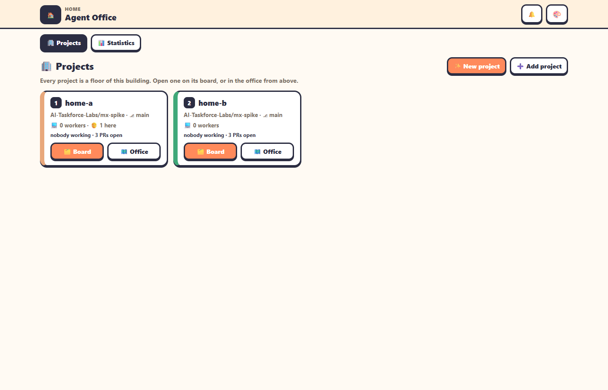
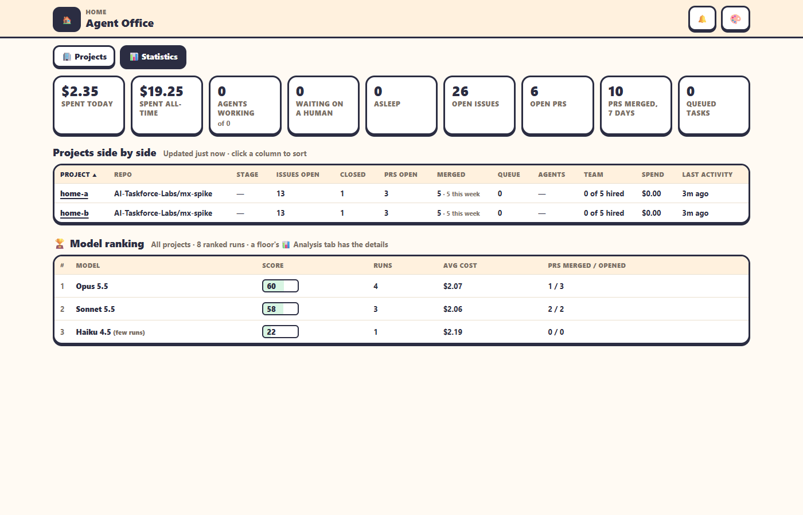
3The team and its roles
Every project has the same structure. Leads are visible agents with fixed (renameable) names; their team members are Claude Code subagents inside the Lead's session.
The rules every role follows
✍️One writer per Mendix app
Only the Lead Developer applies changes to the .mpr. Everyone else drafts, checks (mxcli check) and reviews.
🔁The review loop
When a subagent finishes, its Lead reviews the result, logs a Review in the team journal, then continues, sends it back, or escalates. The office nudges any Lead that stops right after.
📓Team journals
Dated entries in docs/team/<team>.md: kickoffs, reviews, handoffs, proposals. The standup is built from them.
🪑Benching
After 30 idle minutes an agent writes a handoff note and its lessons, then its session is cleared. Re-hiring starts fresh from the Playbook plus that note.
Autonomy: how often agents need you
| Level | Leads escalate to you… |
|---|---|
| 1Directive | every outcome that changes scope, design or plan, and before every next step |
| 2Guided (default) | design, architecture or scope changes; work failing review twice; anything blocking |
| 3Delegated | milestone issues, repeated failures, budget risk |
| 4Autonomous | only critical: security, data loss, client-facing milestones, budget overrun, blocked with no way forward |
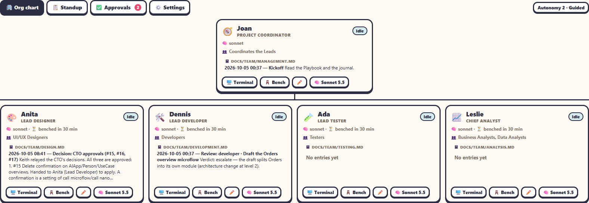
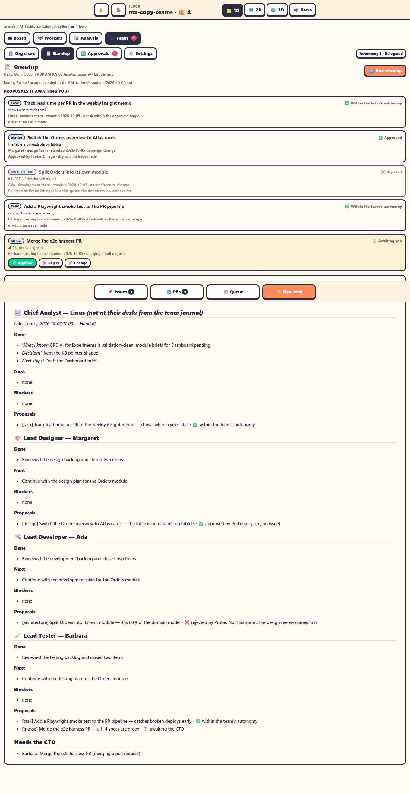
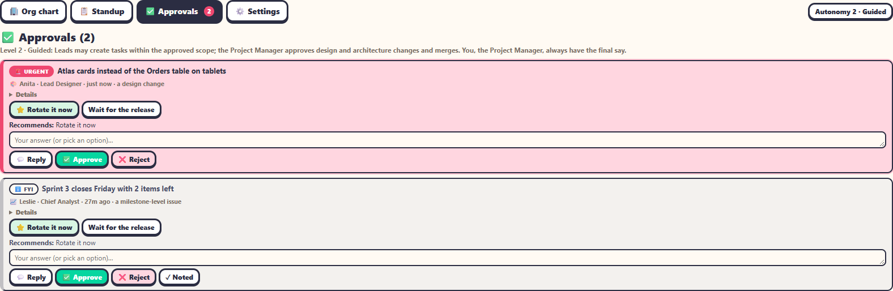
4How work flows
From a GitHub issue to a merged change running in the live app.
team:design, team:development, …).main within about a minute.5Using it day to day
Start a project
🏠 Home → ✨ New project: project details → entry mode (Greenfield, Requirements-driven, Change an existing app, Migration, Assurance) → the toolkit's intake questions → client and team → Review & create, which creates the repo, adds the floor, runs the toolkit setup and can open a Discovery issue. New projects show a Project setup panel (stages P–4) until the build plan is approved.
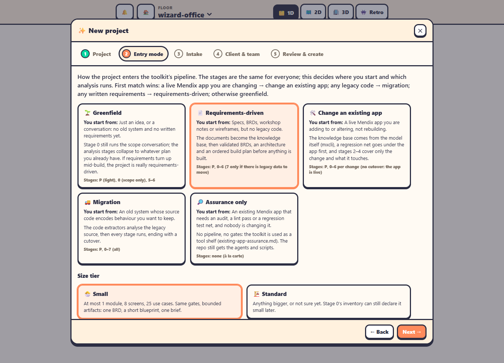
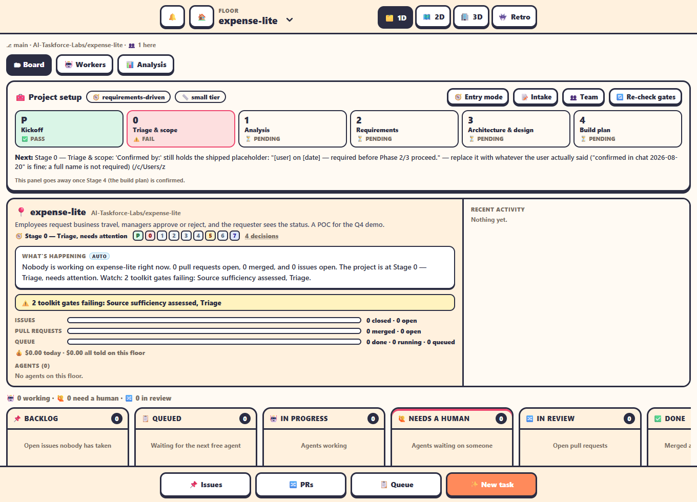
Inside a project
| Tab | What it's for |
|---|---|
| 🎛️ Command Center default | Project details and "What's happening" · the Project Coordinator console (live terminal, prompt box, quick chips, escalation cards with Reply / Approve / Reject) · recent activity. |
| 🗂 Board | Just the Kanban, with team filter chips and hover previews (live terminals for agents, scorecard and screenshots for PRs). |
| 🤖 Workers | Every agent on the floor, the ones waiting on you first. |
| 📊 Analysis | Which model does well on which kind of task, with cost, time and quality. |
| 🌐 Live app | The Mendix app running from main, embedded; Start / Restart / Stop (admin). |
| 🏢 Org chart · 📋 Standup · ✅ Approvals · ⚙️ Settings | The team, its standup, what needs you, and its settings (autonomy, benching, standup time, review nudge, cost cap). |
| 🧩 Team boards | A page per team: its own board, Lead, journal and team panels (Testing: CI scorecards; Development: PRs and live app; Analysis: BRD, insight memos, model ranking). |
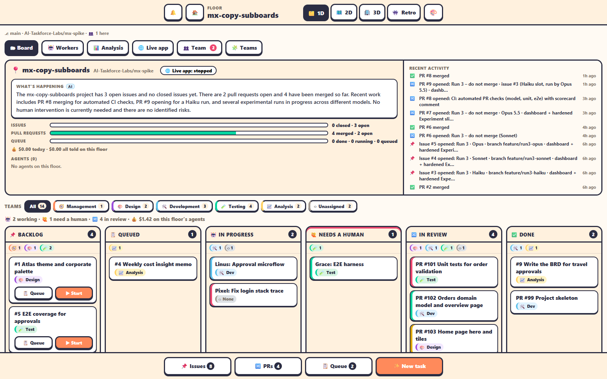
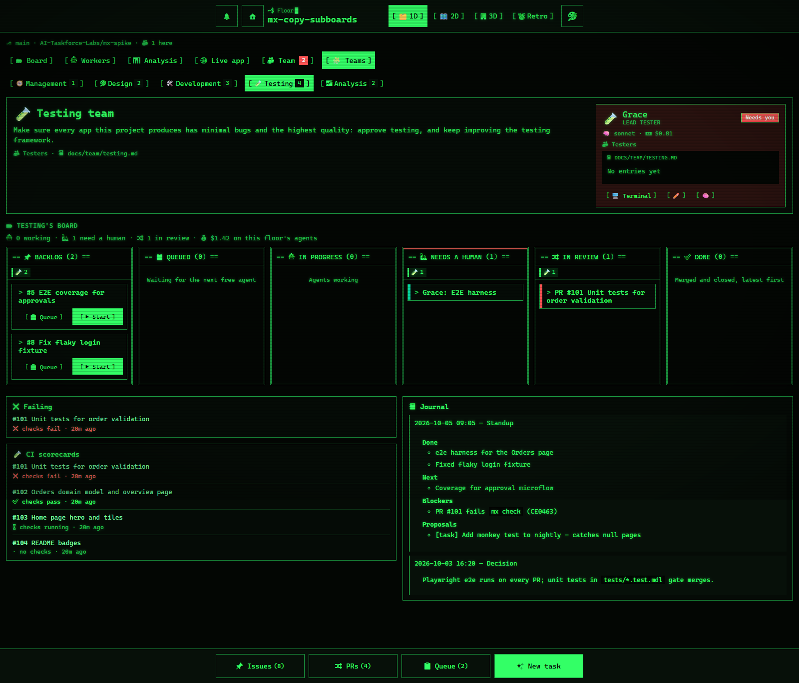
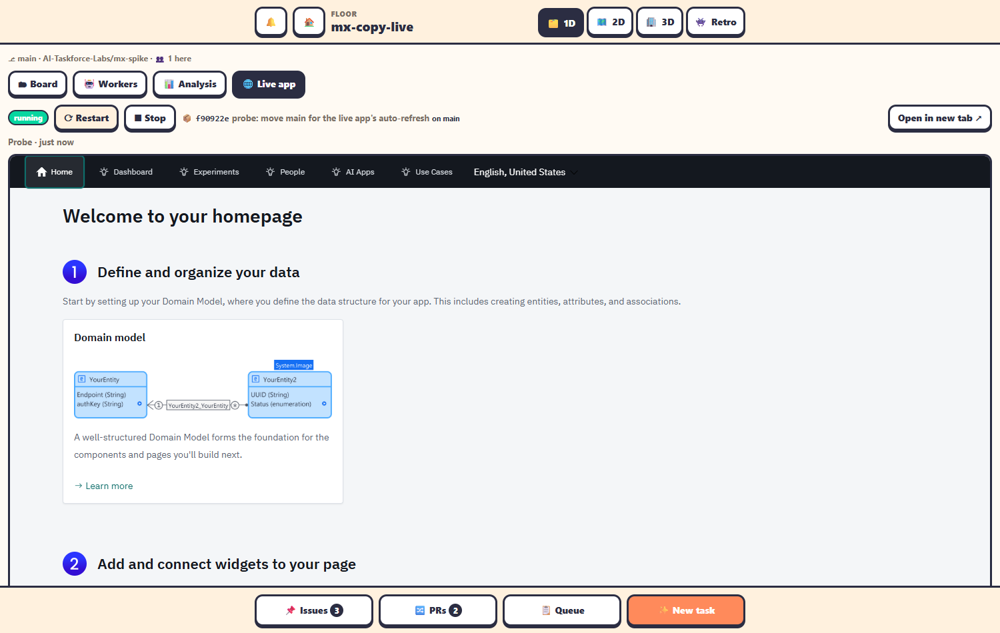
main.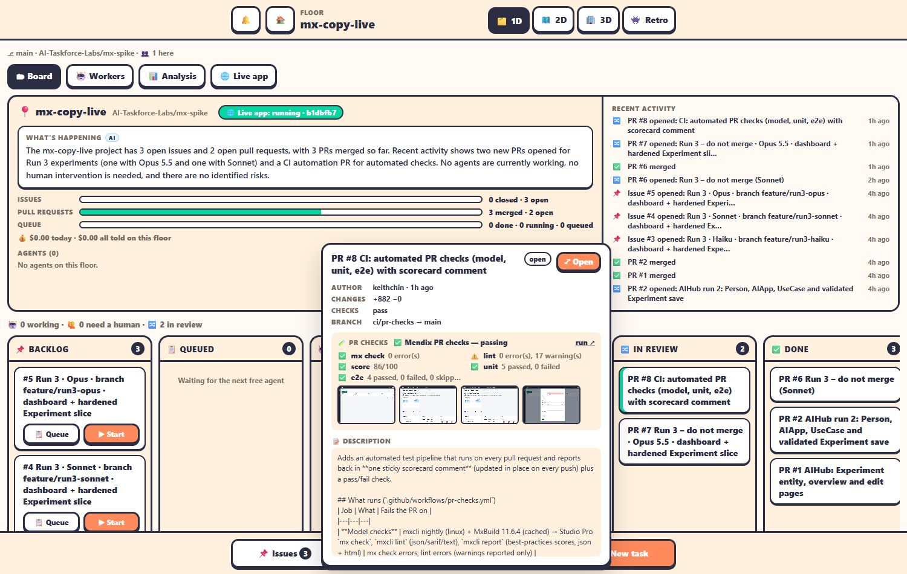
The 2D office and themes
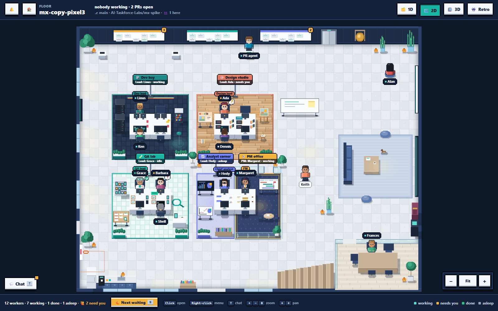
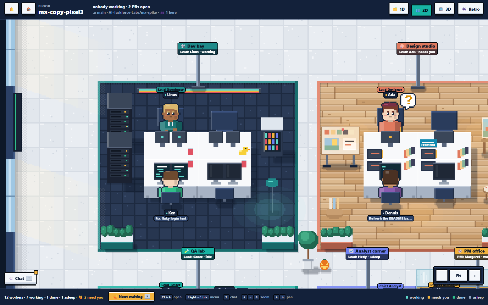
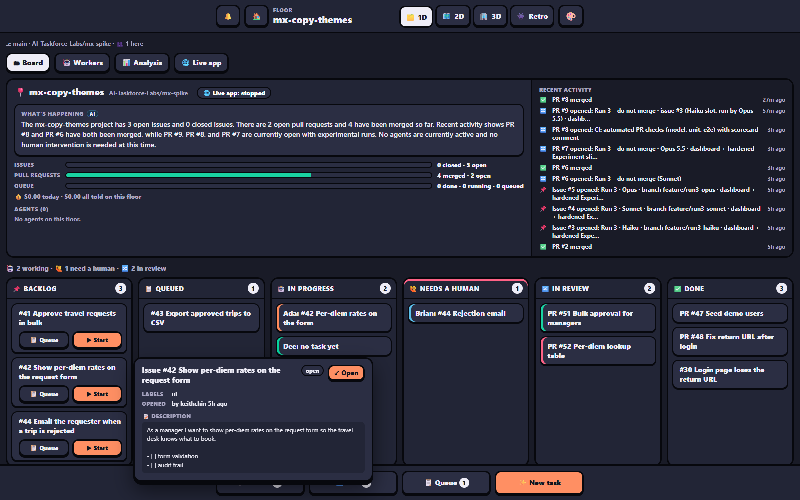
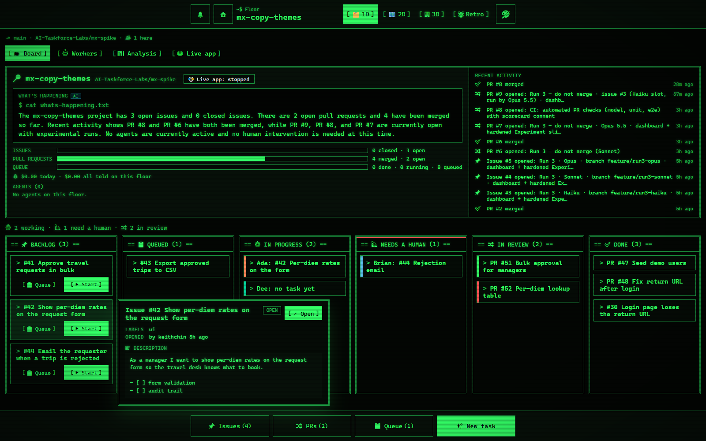
/lite?floor=travel-approval&tab=standup or &tab=teams&team=testing. Bookmark it, or send it to a teammate.6Building Mendix apps
The App Factory's stack: mxcli to change the model, the toolkit for the process, Playbooks for lessons, CI for quality.
⌨️mxcli (Mendix Labs)
Agents read and change the model through MDL scripts; check, lint, report, test, run --local. Validated on Mendix 11.6.x; our projects use 11.6.4.
🧰mxcli-project-toolkit
By Maurits (MendixMau); our private copy in AI-Taskforce-Labs. The process above plus 120+ skills each role reads, with a Windows fix for commits that hung.
📘Playbooks
mxcli-field-lessons (hard-won lessons), qa-tests (how to test), and one Playbook per team role, generated per project.
🧪CI pipeline
On every PR: mx check, lint, score, unit tests, Playwright UI tests against the running app, one sticky scorecard, screenshots. About 5 Actions minutes per run.
7Running it
▶️Start
The Agent Office desktop/taskbar icon opens it (and starts it if needed), or ask Claude Code "Run Agent Office". It runs in a window titled Agent Office; closing that window stops it.
🔐Sign in
http://127.0.0.1:4600 → /home. The shared office password makes you admin (the Project Manager): hiring, approvals, settings and the live app are admin-only.
🔑Tokens (never share)
~/.agent-office-gh-token: the agents' token (AI-Taskforce-Labs, Contents/Issues/PRs only). ~/.agent-office-admin-gh-token: only for creating repos from the wizard. ~/.agent-office-password: the office password.
🔄Restarts
On Windows a restart stops running agents. Their sessions are saved: open an asleep (💤) agent to wake it with its memory.
8Troubleshooting
| Symptom | Fix |
|---|---|
| Agent stuck "waiting on a setup prompt (trust / login)" | Open its terminal and accept Claude Code's trust this folder once. |
| 3D view laggy | Use 1D or 2D for daily work; in 3D try ?gfx=low or the Retro view. |
| Live app: "initial build failed: Object reference not set…" | Stale build output; the office clears it and retries once automatically. |
| mxcli: "A required privilege is not held by the client" | Create the directory junction mxcli names (cmd /c mklink /J <link> <target>) or enable Windows Developer Mode. |
| Commits hang in a toolkit project | Use our toolkit copy (fixed); in scripts run git with stdin closed. |
| GitHub emails about failed runs | The fork's CI runs the full test suite on every push to main; an email means something broke. It never publishes releases. |
Where things are
| What | Where |
|---|---|
| This app (our fork) | agent-spike\agent-office-src · github.com/keithchin/agent-office |
| Launcher and shortcut | agent-spike\start-office.ps1, open-agent-office.ps1, agent-office.ico |
| Office data | agent-spike\mx-spike\.agent-office\ |
| Projects | agent-spike\mx-spike · agent-office\AI-Taskforce-Labs\travel-approval |
| Toolkit (our copy) | agent-spike\mxcli-project-toolkit · AI-Taskforce-Labs/mxcli-project-toolkit |
| Deeper docs | docs/teams.md · docs/features.md · docs/configuration.md · upstream README |
What's next
🧩Plan → issues
Turn the toolkit's approved build plan into GitHub issues for the team automatically.
🤝Client portal
A restricted Client role: progress, test link and approvals at the toolkit's gates.
☁️Taskforce Lab on AWS
The office on a shared Linux server for the Taskforce, with a GitHub App and a live-app proxy.